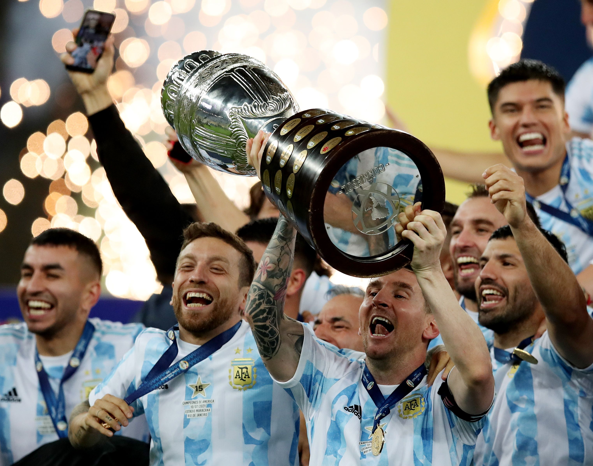
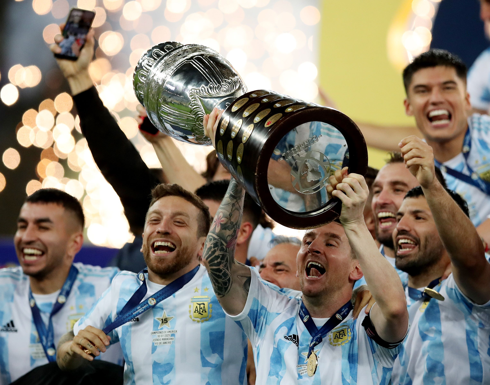
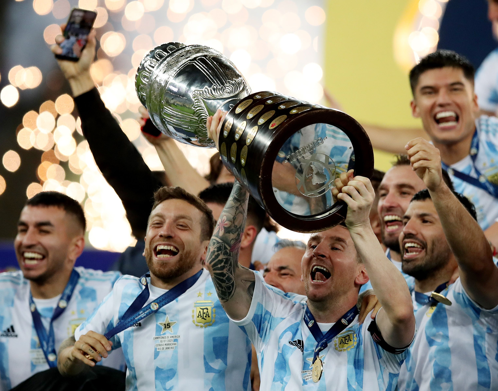
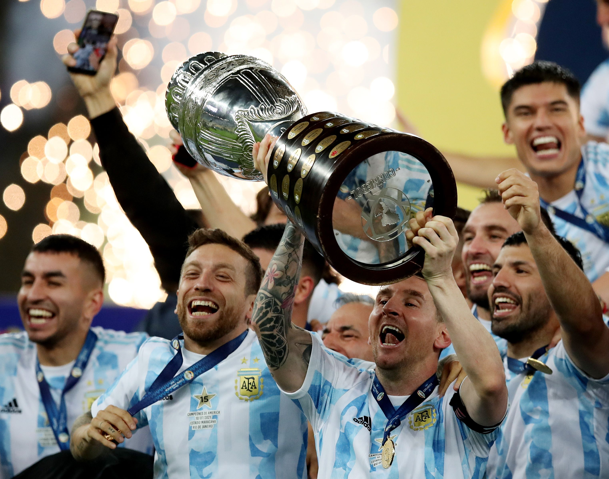

Neymar da Silva Santos Júnior (born 5 February 1992), known as Neymar, is a Brazilian professional footballer. He is widely regarded as one of the best players in the world.

Born and raised in Argentina, Messi relocated to Spain to join Barcelona at age 13,he made his competitive debut aged 17. He is the winner of Copa 2021.

Cristiano Ronaldo dos Santos Aveiro GOIH ComM is a Portuguese professional footballer who plays as a forward for Serie A club Juventus. He is the winner of Euro 2016.

Paulo Exequiel Dybala (born 15 November 1993) is an Argentine professional footballer who plays as a forward for Serie A club Juventus. He is one of the best forward of Argentine team.

Mesut Özil is a German professional footballer who plays as an attacking midfielder for Süper Lig club Fenerbahçe. Nicknamed "The Assist King". He is one of the respected footballer personality of the world.

Icardi began his footballing career at La Masia, the youth system of La Liga club Barcelona.

Ángel Fabián Di María (born 14 February 1988) is an Argentine professional footballer who plays for Ligue 1 club Paris Saint-Germain and the Argentina. He scored the winning goal of Copa 2021.

Kylian Mbappé Lottin (born 20 December 1998) is a French professional footballer who plays as a forward for Ligue 1 club Paris Saint-Germain and the France. He won WorldCup 2018.

Mohamed Salah Hamed Mahrous Ghaly is an Egyptian professional footballer who plays as a forward for Premier League club Liverpool and captains the Egypt.

Harry Edward Kane MBE (born 28 July 1993) is an English professional footballer who plays as a striker for Premier League club Tottenham Hotspur.

Kevin De Bruyne (born 28 June 1991) is a Belgian professional footballer who plays as a midfielder for Premier League club Manchester City.

Philippe Coutinho Correia (born 12 June 1992) is a Brazilian professional footballer who plays as an attacking midfielder or winger for Spanish club Barcelona.